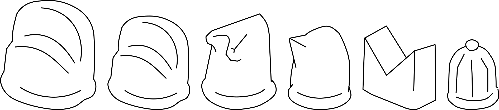
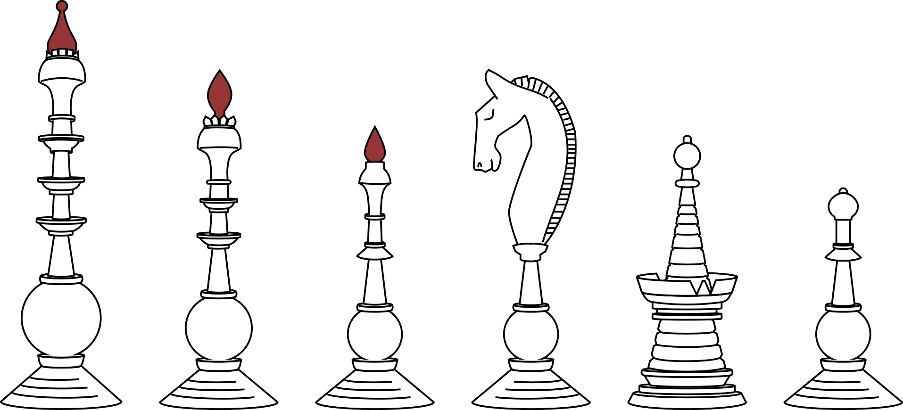
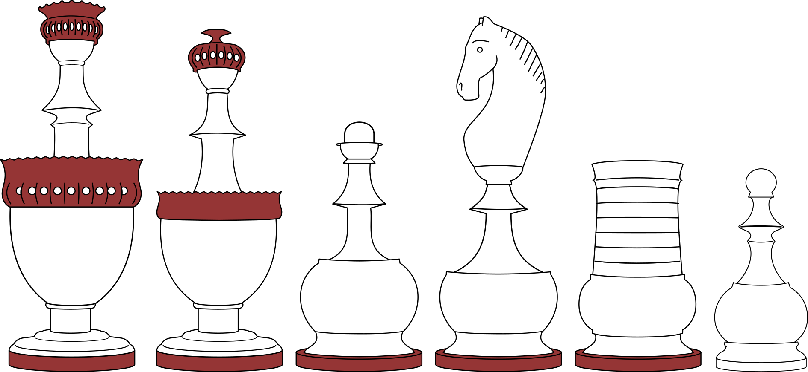
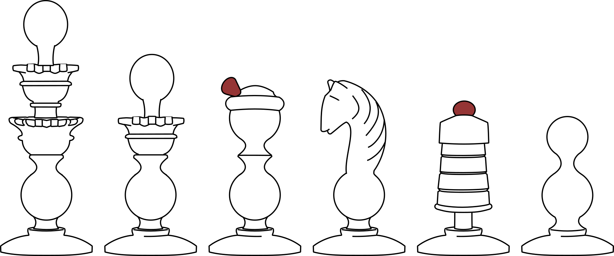
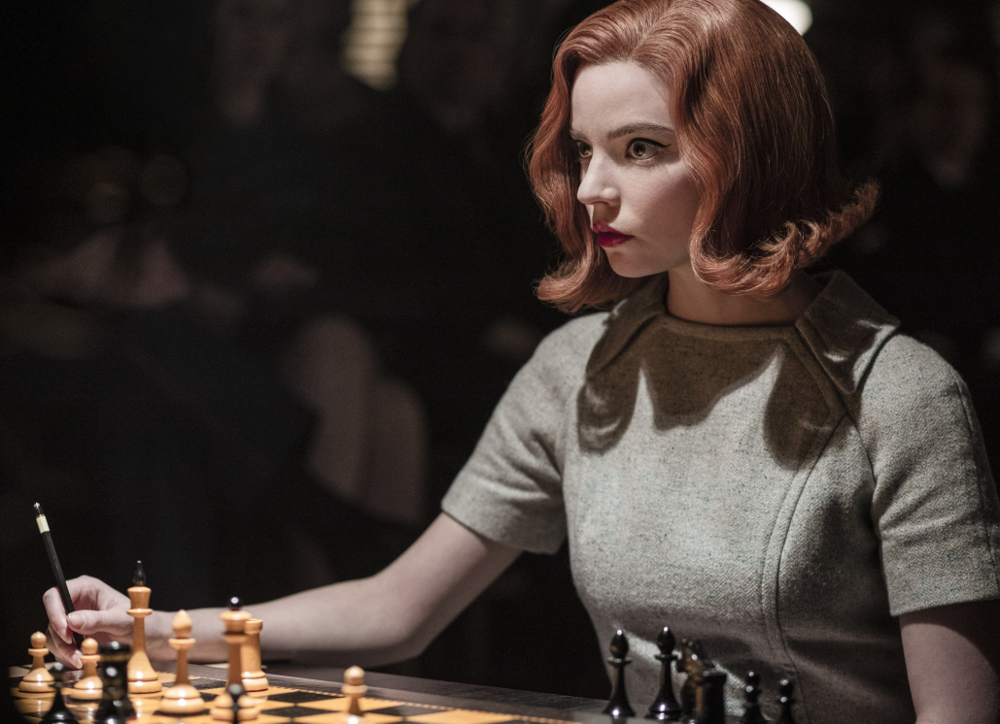
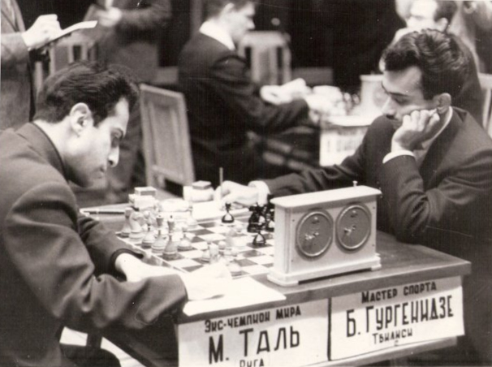
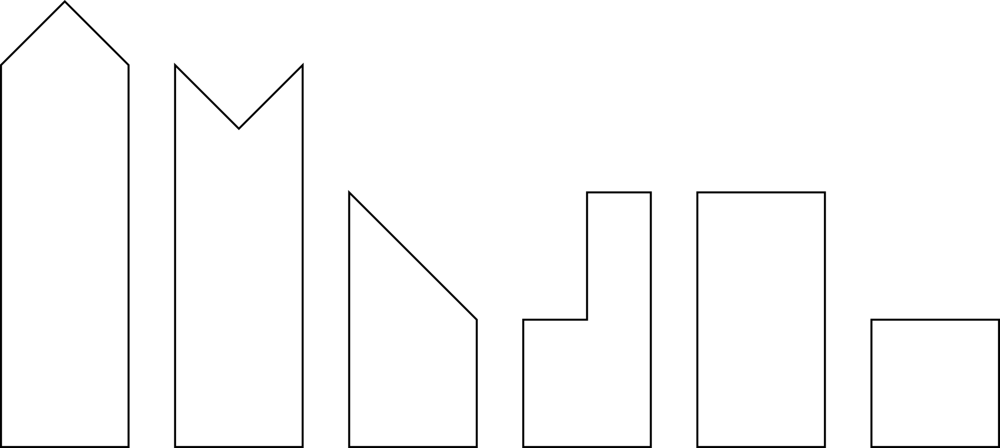

Ancient history
2,500 BC
Indus Valley
The earliest ancestors of chess may have been played by the Indus Valley civilisation more than four thousand years ago. Clay figurines discovered in Lothal may be the earliest "chessmen".
The Lothal "chessmen."
Late antiquity
7th C. CE
By the 7th Century CE, people in India were playing chaturanga ("four divisions"). The name refers to four types of solider that made up the game—infantry, cavalry, elephants, and chariots.
Chaturgana spread outwards from India and is thought to be the common ancestor of many similar games, including chess and shogi.
In the Second Persian Empire, chaturanga becomes shatranj. As shatranj, new rules are introduced that cause the game to begin to resemble modern chess, including the rule that the king cannot be captured but must be rendered helpless: shah mat, the king is helpless, gives us the word checkmate.
The earliest shatranj pieces found are figural. Later, most pieces became abstract/symbolic.
8th C.
Afrasiab
The earliest shatranj pieces are thought to be figurative, like those discovered in Afrasiab, modern Uzbekistan, made from ivory and dating from the 700s. They feature soldiers on foot, horseback or riding chariots or elephants.
The Afrasiab chessmen are normally considered the oldest definitive chessmen. While there followed a shift in favour of abstract pieces, they must not have been completely replaced as later examples of Islamic figurative pieces have been found.
Seven figurative chessmen were excavated in Afrasiab, northern Samarkland.
Early figural chessmen, Left: a bishop (elephant), date given as 7th (!?) to 8th C. Right: rook (chariot) 11th to 12th C.
8th C.
Abstract Persian
The shift to abstract chessmen has traditionally been attributed to religious aniconism: the prohibition of figurative objects to prevent idolatry. However, not only have later figural pieces been found, but per the Met, abstract Persian chessmen are now thought to predate the Islamic conquest. Perhaps the adoption of symbolic chessmen were to make them easier to distinguish in games, or cheaper to manufacture?
Shah and firzan (king and queen) are represented by a large and small throne. The fil (elephant, i.e. bishop) is represented with two tusks, the faras (knight) with one and the rukh (chariot, i.e. rook) with a cleft.
Although they have a simple silhouette, many of these pieces have been found adorned with intricate designs.
Abstract chessmen. Left: One side of the Met's striking, complete 12th Century Persian stonepaste pieces. Right: 8th-10th Century shah, made from jet and carved with dot-and circle patterns that were inlaid with red and white pigment.
Early Middle Ages
Chess in Europe
10th C.
Many of the earliest chessmen in Europe, which follow the same abstract Persian pattern, were found in the Muslim territories of Andalusian Spain and Sicily. Many are thought to originate from the Middle East. Other examples may have been brought to Europe later, during the Crusades, or manufactured to the same design locally.
The earliest chessmen discovered in Europe are in the Islamic mode, like the Sandomierz set (right), an almost complete 11th C. set discovered in Sandomierz, Poland. It is uncertain if this hoard was imported from the Middle East or manufactured in Europe. Regional Museum in Sandomierz.
They have been found across Europe made of many different materials, including ivory, bone, and rock quartz.
11th C.
Charlemagne
Later, Europeans began to carve their own figural pieces. One of the earliest extant examples are the Charlemagne chessmen. Although legendarily associated with Charlemagne, these chessmen are thought to date from about 200 years later. It was gifted to the French monarchy and ended up in the Treasury of Saint-Denis.
Carved from ivory in Salerno, Italy, in the 11th century, the set features Norman-Sicillian-style warriors and other figures. The king and queen (who replaces the vizier) are depicted in elaborate pavilions.
It is hard to imagine that such elaborate figural sets--with this one being seen as so precious as to be kept with the French crown jewels--represent sets that were commonplace for play, however.
12th C.
Lewis
The largest hoard of medieval chessmen is the Lewis hoard, discovered in Uig, Scotland.
These pieces are known for their caricature-like figures with funny, expressive faces. Queens sit on their thrones looking bored, while warders (rooks) gnaw on their shields.
By this time, the elephants have become bishops, as the two "tusks" were reinterpreted as a bishop's mitre.
Still from Harry Potter and the Sorceror's Stone (2001), where animated Lewis Chessmen come alive and fight it out on the board.
Over time in Europe, some pieces became reinterpreted.
Queens:
By the time of the Charlemagne set, the vizier piece has become a queen.
A simple explanation is that her queenliness was suggested by her proximity to the king. Davidson says the change was due to homophony between fierge (counsellor) and vierge (maiden), writing "she owes her title to accident of sound." He has it that maiden became the Virgin Mary and the "queen of angels"--but he also believes it only happened in the 15th-16th Century while the piece was definitely depicted as a queen long before then.
The queen only later aquires her long-range moveset and becomes the most powerful piece in the late 15th Century. Feminist scholar Marilyn Yalom connects this with the cult around the Virgin Mary and Queen Isabella I of Castile. Yalom also suggests the 10th Century Holy Roman Empresses Adelaide of Burgandy and her daughter-in-law Theophanu as inspirations for vizier's transmutation.
Bishops:
While the Charlemagne set features figurative elephants, by the Lewis set the elephants have become bishops, as the two "tusks" of the elephant pieces were reinterpreted as a bishop's mitre. This explanation appears to satisfy everyone.
In French, the bishop is the fou, fool as in court jester. He remains an elephant (слон, slon) in Russia.
Rooks:
The chariots of the Charlemagne set become sword-and-shield wielding warriors in the Lewis set, but would later be reimagined as towers.
A popular explanation given for this is that rukh was equated with either Medieval Latin rocca or Italian rocco meaning tower, and indeed in modern Italian rocco means both rock and fortress. However, Treccani asserts rocco first arrived in Italian meaning the chessman, from the Persian rukh, and only later gained the meaning tower (synonymous with torre). Rocca appears in Du Cange's Medieval Latin dictionary with the meaning of fortress, but its etymology is unknown.
Alternatively, Hans Holländer has attributed the origins of the rook-as-tower to Vida's 16th Century poem Scacchia Ludus, where rooks are depicted as war elephants which carried towers on their backs.
Over time in Europe, some pieces became reinterpreted.
Queens:
By the time of the Charlemagne set, the vizier piece has become a queen.
A simple explanation is that her queenliness was suggested by her proximity to the king. Davidson says the change was due to homophony between fierge (counsellor) and vierge (maiden), writing "she owes her title to accident of sound." He has it that maiden became the Virgin Mary and the "queen of angels"--but he also believes it only happened in the 15th-16th Century while the piece was definitely depicted as a queen long before then.
The queen only later aquires her long-range moveset and becomes the most powerful piece in the late 15th Century. Feminist scholar Marilyn Yalom connects this with the cult around the Virgin Mary and Queen Isabella I of Castile. Yalom also suggests the 10th Century Holy Roman Empresses Adelaide of Burgandy and her daughter-in-law Theophanu as inspirations for vizier's transmutation.
Bishops:
While the Charlemagne set features figurative elephants, by the Lewis set the elephants have become bishops, as the two "tusks" of the elephant pieces were reinterpreted as a bishop's mitre. This explanation appears to satisfy everyone.
In French, the bishop is the fou, fool as in court jester. He remains an elephant (слон, slon) in Russia.
Rooks:
The chariots of the Charlemagne set become sword-and-shield wielding warriors in the Lewis set, but would later be reimagined as towers.
A popular explanation given for this is that rukh was equated with either Medieval Latin rocca or Italian rocco meaning tower, and indeed in modern Italian rocco means both rock and fortress. However, Treccani asserts rocco first arrived in Italian meaning the chessman, from the Persian rukh, and only later gained the meaning tower (synonymous with torre). Rocca appears in Du Cange's Medieval Latin dictionary with the meaning of fortress, but its etymology is unknown.
Alternatively, Hans Holländer has attributed the origins of the rook-as-tower to Vida's 16th Century poem Scacchia Ludus, where rooks are depicted as war elephants which carried towers on their backs.
Late Middle Ages
1420-1450
Italian Renaissance
An incomplete set from Northern Italy, donated with period chess board to the Ashmolean Museum by J. Francis Mallett.
1485
Caxton
In addition highly decorative figural chessmen, chess players of the Middle Ages would have played with simpler, abstract pieces.
Those above are based on the engravings of The Game and Playe of the Chesse, a 1485 a translation by William Caxton of a 13th Century allegorical work by Jacobus de Cessolis, and a reproduction of the same from The Historic Games Shop, Wales.
16th Century
Early Modern Europe
Windsor's simple
In the absence of artefacts, depictions of chessmen in 16th Century art give us an idea of what sets would have looked like in Europe at this time.
In the family portrait of the 3rd Baron Windsor (1568), of uncertain authorship, right, Windsor's children play with simple, abstract (that is, non-figural) chessmen.
In addition, in his 1562 translation of an originally Italian chess manual, James Rowbotham describes typical chessmen in England around this time: (edited for modern orthography)
"Our English chessmen are commonly made nothing like unto these foresaid fashions [i.e. they are not figural]: to wit, the king is made the highest or longest; the queen is longest next unto him; the bishop is made with a sharpe top, and cloven in the middle not much unlike to a bishop’s mitre; the knight has his top cut asloope [cf. Headless Horsemen, below], as though being dubbed [i.e. in a ceremony conferring knighthood] knight; the rook is made most like the king and the queen, but is not so long; the pawns made the smallest..."
Compare to the 18th C. Rowbotham chessmen, below.
Anguissola's Figural
Sofonisba Anguissola's 1555 painting The Game of Chess, detail right, depicts the artist's sisters playing chess with wooden, bust-like figural pieces.
Rowbotham's manual gives a description of what was apparently considered typical Italian chessmen as figural pieces, thus: (edited for modern othography)
“"Some make them like men, where the king is the highest [i.e. tallest], and the queen (which some name Amazon or lady) is the next, both two crowned. The bishops some name alplhins [i.e. standard bearers], some fools, and some name them princes... other some call them archers, and they are fashioned according to the will of the workman. The knights some call horsemen, and they are men on horse back. The rooks some call elephants, carrying towers upon their backs, and men within the towers. The pawns some call footmen, as they are soldiers on foot, carrying some of them pykes, other some arquebus [15th-17th C. gun], other some halberds, and other some the javelin and target..."
Detail from The Game of Chess (1555), Sofonisba Anguissola.
1561
Ruy López de Segura writes Libro de Axedrez.
17th Century
Selenus
This pattern has its origins in the early 17th Century, where similar chessmen appear in the illustrations of Gustavus Selenus's 1616 chess manual. It would remain popular in Germany and Northern Europe until the 1850s.
Selenus pieces are slender and delicate chessmen with multiple tiers. Knights have become more clearly horse's heads, and the rook a tower.

Dutch
Slight and delicate. These are normally attributed to the Netherlands, although it is uncertain exactly where and some sets at auction have been speculated to come from Germany or Denmark.
In this pattern, the kings, queens, and bishops appear as slender, 'multi-knopped' columns, distinguished mainly by height. They often have contrasting finials, which may be bone on an otherwise wooden set. The knights look solemn, and are dramatically arched. Rooks are stylised towers with spires.
17/18th C.
Rowbotham
In a 2018 essay, Dermot Rochford christens this pattern of 17th/18th Century English chessmen Rowbotham, arguing that they may retain or recapitulate features from James Rowbotham's 16th Century description.
Cf. the Windsor Family Portrait, above.
18th Century
1740s on?
Archangel
Uncommon pattern attributed to Kholmogory or the Archangel region of Russia in general. Kholmogory, better known for figural sets, was a centre of bone carving in 18th Century Russia.
These chessmen may be made from animal bone, mammoth tusk or walrus ivory. Some chessmen of this silhouette have carved faces for finials.
Kholmogory figural
Figural chessmen from the Russian bone and walrus tusk carving centre of Kholmogory. These often depicted armies of different nations, where they opposing sides were not necessarily stained different colours but distinguished by different troop design.
In the above pattern (Metropolitan Museum of Art), as is common in Russian figural sets, rooks are depicted as ships and bishops as elephants.
1769
Baron von Kempelen builds the Mechanical Turk, a hoax robot chess player.
c. 1770
Washington
Known as Washington pattern after a famous set once owned by the chess enthusiast and first US president of the same name.
Typically: kings have "cogged" crowns, queens with ball finials, bishops with split mitres, knights arched and rooks as turrets.
c. 1770
Regency
The centre of chess in the 1700s, and Philidor's regular haunt, was the Café de la Régence, Paris. It gives its name to the Régence or Regency pattern chessmen that were popular at the time.
Though they would fall out of favour for easier to distinguish pieces, they were still popular enough by the early 20th Century to be depicted in Antti Favén's 1913 painting of the Café.
Urn-shaped stands with dainty stems. Kings with flattened crowns. Queens and bishops with spherical finials (harder to tell them apart). Bishops collars with crimped edges to evoke the biretta, a clergical hat. Knights are figural horse heads: contemporaneous sets with turned knights instead of carved, resembling the bishops and queens, are called Directoire sets.
Detail from The Chess Players (1913), Antti Favén.
c. 1780
Lyon
Thought to originate near Lyon in France, such sets resemble Regency sets with the addition of bone or ivory trimmings--collars, finials, feet.
In a similiar mixed-material pattern known as Inverted Lyon, the urn bases are upturned, more like bells, and the bone collars resemble more of a skirt.
1795
Pistil
A descendant of the Selenus pattern from the previous century, John Calvert, the London-based turner, is thought to have originated this pattern in 1795. Similar sets of this style followed from Calvert, Lund and others into the next century.
The king and queen are adorned with flower-like structures that give rise to slender towers like stamen, inspiring Camaratta's quaint name for these, Petal and Pistil.
Camaratta's company "House of Staunton" produced a run of reproductions of the pattern in the 1990s.
Dieppe
Figural carved chessmen were still made alongside turned wooden, ivory and bone pieces.
Dieppe, the centre of ivory carving in France, was known for producing ivory bust-style chessmen depicting political themes. Opposing kings becoming busts of real people in conflict like Henri IV and Napoleon, and sets depicting different national armies from history
This 1870s set (Metropolitan Museum of Art) represents King Ferdinand and Queen Isabella of Spain in the Granada War. As a French set, bishops are normally jesters (French: fous). Knights may have riders, so called "hobby-horse knights."
Late Modern Period
18/19th C.
Barleycorn
Ornate chessmen turned from bone, often carved with ornate foliage decorations.
Because only the outside tube of the bone (cortex) can be carved, these are made from multiple pieces screwed together. The diameter of the marrow that filled the bone limits the minimum diameter of the barrels.
Varied King's finials—flower, cog-shaped, or imperial crowns—possible. Rooks as full towers, with or without flag.

Detail from The Chess Game (1878), Julian Ashton.
19th Century
Pulpit
Though historically referred to as Spanish Pulpit chessmen, the origin of the intricately decorated Pulpit chessmen has been a matter of debate—but they're probably not from Spain.
The Russian bone carving centre of Kholmogory has been suggested, although interestingly most of these sets appear in English collections. Garrick Coleman asserts that these were made by French prisoners of war, held in England during the Napoleonic Wars, who were known to make bone crafts to sell for income.
Pulpit chessmen may be entirely non-figural, but many partial-figural examples exist (below). There are modern Mexican bone sets known as Mexican Pulpit due to their similiarity to these patterns.
Figural Pulpit
Figural sets in the Pulpit style, where the kings, queen, and bishops feature upper bodies or just heads emerging from Pulpit-style bases.
c. 1830
St. George
Known as St. George after the St. George Chess Club, London, Old English, or Calvert English. Originating from John Calvert's London workshop, similar patterns would be picked up by other workshops including Jaques of London and William Lund.
Heavy set pieces with wide bases, decorated with many 'knops' (the 'ribs' up the stems). The bishops have split open mitres.
Headless horsemen
The asymetric knight's horse head could not easily be produced on a lathe alone.
Alternatively, knights could be turned on a lathe as with the other pieces, and the head cut off at an angle. These "slope-cut" knights were seen in cheaper sets.
c. 1830
Indian Islamic
Originating from Muslim-majority Northern Indian. Other similar chessmen were made in other majority Muslim countries like Turkey.
May be of a wide variety of shapes: mushroomoid, spools, and so on. Common features are that they are completely nonfigural, without symbols, and pieces are distinguished by size.
Their similarity to ancient Persian shatranj pieces is undeniable. Despite their simple silhouettes, often they are painted with bright colours or patterns.
c. 1800-1850
Biedermeier
Biedermeier chessmen, named for the Biedermeier period and design movement, were popular in Central Europe in the first half of the 19th Century.
The bishops finials deserve comment: often with opposite-coloured balls or batons evoking a 'feather in a cap'. In later sets they resemble hats more closely, transforming into a 'beret' (disk attached at a jaunty angle), or a little top hat or bowler.
Detail from Das Schachspiel (1937), Lajos Kolozsváry.
Hats of Biedermeier bishops
c. 1800-1850
Hastilow
Decorative, stocky chessmen, reminiscient of the St. George pattern with more elaborate heads. Typically referred to as Hastilow as they are attributed to Charles Hastilow, a turner from mid-19th Century London.
c. 1800-1850
Killarney
When Killarney, Ireland became a popular tourist destination in the mid-19th Century, a cottage industry in woodwork for the tourist trade flourished.
"Killarney ware," as it is referred to at auction, comprises popular and decorative antiques of yew, oak, or arbutus. Game sets, including chessmen, were produced alongisde furniture, boxes, and trinkets.
Killarney chessmen can be very varied: this is less a specific pattern as much as a designation of antiques by origin—i.e. chessmen that are also Killarney ware. However, many are slender, with pointed kings finials, rounded queen's finials, flower-bud bishop mitres.
c. 1800-1850
Burmese-Canton
Historically called Burmese as they were misattributed to Burma (modern Myanmar), these kind of highly detailed sets are now thought to have been made in Canton for the export market.
Adding to the confusion, sets used to play chess's cousin game sittuyin, a Myanma offshoot of chaturanga, are often listed as "Burmese" as well. Real Burmese sittuyin sets are very different: they are figural, featuring squatting generals, elephants, horses and chariots.
Detail from The Chess Board (1927), Herbert Ashwin Budd.
1840s
Northern Upright
A precursor to the Staunton design, Upright or Northern Upright chessmen show the beginnings of the trend towards simplified, more practical chessmen to play with.
They are also called Edinburgh Upright after the Edinburgh Chess Club, where they originated, attributed to Lord John Hay.
They made their way to London where they were produced by Hallett of Holborn and Jaques.
1840s
Dublin
Another Staunton antecedent. Some of these sets are attributed to Ireland, but they were also made by Jaques of London.
The Dublin pattern combines Upright-style iconic heads with baulster-type stems. Many examples look uncannily modern, with unadorned, simple shapes.
Detail from The Veterans (1886), Richard Creifelds.
1840s
Hallett
The originator of this pattern is uncertain but it has been attributed attributed by Dr Langer to Hallett of Holborn on account of the knight design.
An uncommon offshoot of Northern Upright chessmen: shorter and sturdier.
1849
Staunton
The 'just so' story of the Staunton pattern is this: the variety of chessmen designs popular in different parts of Europe had become an obstacle to international chess competitions. The existing styles could be impractical and top-heavy, or players had difficulty distinguishing pieces of unfamiliar sets. Nathaniel Cooke designed a more practical set that so impressed Howard Staunton, chess master, that he put his name to them.
Cooke was supposedly inspired by London architecture and horses of Classical sculpture the like Elgin/Parthenon Marbles. Variants on the knight design are used to distinguish different antique and collectable Staunton sets. The queen now has her coronet, rather than a ball finial of Upright, St. George, and other antecedent sets. For the Smithsonian, architect Jimmy Stamp writes:
"The work of architects like Christopher Wren, William Chambers, John Soane, and many others inspired the column-like, tripartite division of king, queen, and bishop. A row of Staunton pawns evokes Italianate balustrades enclosing of stairways and balconies."
The original Staunton chessmen were produced by Jaques of London from 1849. Later, other manufacturers produced their own Staunton-style sets. The leading expert on the Staunton pattern is Sir Alan Fersht FRS, better known for his work on protein engineering, who has published a couple of guides to Jaques and contemporaneous chess sets.
Today wood, plastic, and metal sets following the Staunton pattern are cheap and widely available. Staunton became the de facto standard chessmen by the mid-20th Century, and today FIDE officially requires the pattern for tournaments.
So practical and iconic were the Staunton chessmen that even before they reached total cultural hegemony, the iconic pattern would inform other chessmen designs internationally that responded to or took on features from the pattern.
Detail from The Chess Players (1876), Thomas Eakins.
1850
Merrifield Philidor
George Merrifield was an English turner from the first half of the 19th C., who had apprenticed under Calvert and was known for his exqusite St. George- and Lund-style sets.
Merrifield produced this pattern in an unsuccessful attempt to compete with the Staunton pattern. Per Crumiller, these were only produced for 6 months!
1851
Adolf Anderssen wins the first international chess tournament, held in London.
c. 1880s
Austrian Coffeehouse
The formidable Austrian Coffeehouse or Old Vienna chessmen, are something of a fusion between the Biedermeier and Staunton patterns, although auction houses seem to use Coffeehouse as more of a catch all for any non-Staunton Central European patterns.
These became the typical chessmen for games in Vienna and Central Europe from the late 19th until the middle of the 20th Century, when Staunton gradually overtook them. The kings and queens have gear-like crowns. Bishop mitres are usually opposite coloured.
Carlsbad 1929
Nimzowitsch, Alekhine, and Coffeehouse chessmen in the Carlsbad 1929 tournament.
c. 1880s
Česká Klubovka
The Česká Klubovka—Chess Club—chessmen were designed in Prague in the 1880s by Czech sculptor Bohuslav Schnirch. Writing in 2018, chess collector Nicholas Lanier contextualised Schnirch's chessmen as a salvo in a culture war asserting independent Czech national identity.
"But chess was also split along the cultural and language divide... In the course of the [eighteen] eighties Schnirch found it necessary to provide his club with a proper chess set in a different style--the prevalent coffeehouse chess men were a Vienna invention, therefore the oppressors' "chessic" imposition... a new chess set responding to the national spirit of Czech Chess players was needed."
The influence of the Staunton design is clear, but with a Czech twist. Opposite-coloured heads or finials, common in Central European sets, are typical for the bishops and often present on the queen and king. The bishops tend not to have a split mitre, but have a grove or flick of colour suggestive of preaching band neckwear.
1886
Steinitz crowned first World Chess Champion.
1890
Knubbel
Petite pieces with wide bases, these were the go-to chessmen in Denmark through to the 1960s.
The name Knubbel (i.e. Lump) seems to have been coined by a German chess collector website, under the impression the pieces were an exclusively German pattern. In fact, research by Langer & Seiersen confirms their Danish origin, emerging by the 1890s. In Denmark they have gone by a few monikers: Copenhagen chessmen, and later Danish-type and the (Danish Chess) Union model. Nevertheless, Knubbel seems to have stuck, in the Anglosphere at least.
Early 20th Century
1910
Schlechter-Lasker
Or Austrian Upright, a pattern known from the Carl Schlecter vs Emanuel Lasker world championship match of 1910.
c. 1910s
Averbakh
Following a typical Russian design philosophy, these tall and thin pieces have wide bases to make them more stable to play with.
Commonly referred to as Averbakh, after Yuri Averbakh who was photographed with such chessmen in the 1949 Moscow Championship, they are also known as Soviet Upright or Russian Upright. Noshir Patel, in conversation in the Chess Collectors Hangout podcast, relates his discovery of such a set with crosses for the king's finials, indicating that the pattern has origins in Tsarist (pre-1917) Russia.
1920
Man Ray
Dada and surrealist artist Emmanuel "Man Ray" Radnitzky's original and minimalist take on chessmen. Man Ray plays chess against Marcel Duchamp in Entr'acte, the 1924 silent film and Dada art piece—although not with this set.
1923
Bauhaus
This iconic set in Bauhaus style was designed by Josef Hertwig.
This set is distinctly minimal, formed from simple geometric solids. The designs for the knights and bishops reflect how they move on the board.
1930
Poltava bell-bottom
Originating from Ukraine's historic woodworking region of Poltava, there is little known about the origins this Soviet-era design, but Chuck Grau conjectures the "bell-bottoms" may have been inspired by the Poltava skyline and the domes and towers of its monasteries and churches.

One of Poltava's beautiful domed buildings is the Church of Sampson the Hospitable, built to commemorate the Battle of Poltava.
1930s
Lardy Staunton
Lardy were a French chess set manufacturer known for the mass production and export of Staunton-pattern sets. They began production of these boxwood sets in the 1930s, and Lardy reached their greatest popularity in the 1950s-60s before closing down in 1992. Nicholas Lanier wrote an essay on the history of the Lardy company and their rivals in the French woodmaking region of Jura.
Most distinctive of Lardy sets is the Lardy knight, which has a recognisable profile with an erect head held parallel to the ground, bulging eyes and striations on the neck. Their characterful appearance—Lanier called them "Roman nosed"—probably contributes to enduring popularity of Lardy sets: what were once a mass-market pattern is now the subject of premium, luxury reproductions.
1934
Bundesform
The Deutsche Bundesform, German federal shape, was developed under the Nazis to replace foreign Staunton chessmen with Germany's own nationalist and regime-endorsed design. Holger Langer attributes the design to German chess master Ehrhardt Post.
They were made famous by their use in the Munich 1936 Olympiad and remained popular in Germany long after the war.
1940s
Wartime chess sets
Reflecting wartime austerity during the 1940s, simple travel sets, where chessmen were repesented by symbols printed onto card or wooden tokens, were sent to soldiers on the front or in Red Cross parcels to prisoner-of-war camps. Turned over, they could do as draughts men.
1944
Max Ernst
Designed by Dadaist painter and sculpture Max Ernst for the 1944 Imagery of Chess exhibition, one notable feature of this pattern is that the Queen is taller than the King.
Larry List of the Man Ray Trust writes that Ernst was inspired by Angkor Wat, Easter Island, and African art.
1945
Chavet Staunton
Henri Chavet was another turner from the French Jura. He began making Regency-style chess sets in 1912, but is well known for his Staunton produced sets after World War II.
Most characteristic are the Chavet knights, machine cut with slopy, curvy sides. The design has had a lasting influence, clearly reflected in the knights of Well's World Championship chessmen.
1950s
c. 1950
Morodovian-Latvian
Collector of Soviet chessmen Arlindo Vieira coined the name Latvian to refer to these pieces. Chuck Grau identifies that they more likely originated in the '40s-'50s in Mordovian gulags.
These chessmen are slender and unweighted, but made stable with wide bases. The design received a resurgence in popularity after being featured in the final episode of The Queen's Gambit.
"Harmon v Borgov"
Anya Taylor-Joy as Beth Harmon.
1950
Hungarian Staunton
Chessmen of this style seem to descend from the Staunton-ised pieces used in the first Candidates tournament, held in 1950 in Budapest, although with some deviation: in most sets bishops' mitres (opposite-coloured, of course, in the Central European fashion) lack the cut seen in the sets used in the tournament.
Isaac Boleslavsky at the inaugural 1950 Candidates in Budapest with Hungarian Staunton pattern pieces.

Romanian Staunton
Romanian-pattern Staunton chessmen are very utilitarian, with no collars on pawns and the rooks lacking crenellations. Typical with Communist-era sets there is no religious imagery, and typical of Central European sets the bishops often have opposite-coloured heads. This sometimes includes the bishop's collar.
1950
Dubrovnik
This utilitarian design, by Petar Poček, was commissioned for the 1950 Chess Olympiad held in Dubrovnik, Yugoslavia.
Dubrovnik pieces are unweighted: instead, they are especially stout with wide bases to keep them steady. Famously, they were Bobby Fischer's favourite design. Only a small number of sets were originally made, but they became highly sought-after. Updated versions, Dubrovnik II and Dubrovnik Minčeta, were designed and produced in the 1960s.
The knights have distinctive tucked-in heads. In common with other Communist-era sets, religious symbols like the cross on the king's crown or and groove in the bishop's mitre are missing. Bishops have opposite-coloured finials. Rooks have five merlons (parapets), to evoke the five-pointed star.
Bobby Fischer poses with Dubrovnik chessmen on the cover of Life magazine.
1951
Baku
Russian pieces known as Baku for their appearance in photos of the 29th USSR Chess Championship, 1961, which were held in Baku, modern day Azerbaijan.
Grau relates that Russian collector Sergey Kovalenko has followed the paperwork back to 1953 for these pieces. I think they must date from earlier, however, as they appear in a photo of Isaac Boleslavsky and Semyon Furman helping David Bronstein to prepare, apparently for his World Championship match with Mikhail Botvinnik, dated 1951.
Boleslavsky, Furman, and Bronstein (L-R) and Baku chessmen in 1951.
Mikhail Tal v. Bukhuti Gurgenidze during the eleventh round of the 1961 USSSR Chess Championship.
c. 1958
Universum
The Universum or Space Age chessmen were produced by Italy's ANRI woodcarving company to a design by Arthur Elliot, a former Disney animator who had worked on Bambi.
1960s
1960s
Berliner
Modernist German set. Sets like this were sold by, and may have been manufactured by, G Henke & Co.
1962
Alcoa
Extruded and anondised aluminium pieces designed by Austin Cox (1924-2015) for Alcoa Aluminum Co.
The simplified, elongate pieces resemble cutlery. Alcoa commissioned the sets, which came with a wall-mounting walnut display case, as gifts for their most valued customers, presumably more as an art piece than with the thought that they would be used.
Makonde
Striking figurative, bust-style chessmen carved by Makonde woodworkers of Tanzania and Mozambique.
In the above set, the human figures, except the bishops, have facial markings representative of Makonde scarification. Kings have fez-shaped crowns, à la colonial-era soldier uniforms. Queens with water pots. Knights are represented by giraffes instead of horses, and the rooks by Makonde buildings instead of castles.
Spanish Regency
Mid-century Spanish pattern that combines Staunton and Regency-style signifiers with more sturdy bases.
This pattern is sometimes referred to as just Spanish, although both Spanish and Spanish Regency may be ambiguous, as pieces with more traditional 18th C. Regency profile--with urn-shaped bases--were also being produced in Spain at this time.
Kings with flattened crowns, queens with bell-shaped or conic heads (a princess's hennin perhaps?) a la Regency. Bishops with cut mitres a la Staunton. Knights with stub-noses, apparently characteristic of Spanish Staunton sets also.
Polish Kings
A popular decorative design, with distinctive kings and queens and stylised crowns with opposite-coloured finials.
They often have geometric patterns burnt on in pokerwork, or painted on.
They seem to originate from Węgiel, a Polish games manufacturer, which calls them variously the Royal and King's design, although many similar clones from other companies are now available.
G.M. Korchnoi playing with Polish Kings pieces.
1966
Lanier Graham
These minimalist, abstract pieces from artist F. Lanier Graham are delightfully efficient and could be cut from a single piece of wood.
The Lanier chessmen interlock and can be arranged into a rectangle. A whole set could be cut from two pieces of wood, one for each colour.
1972
Fischer defeats Spassky at the 1972 World Chess Championship.
A politically-charged, Cold War era game. Fischer's victory ended Soviet hegemony of chess, and it's no surprise that the Soviet Union would collapse a mere 19 years later.
1980s
1980
Olympic
Chessmen to commemorate the 1980 Summer Olympics in Moscow. Mixed material pieces, made of plastic with metal accents, with uniform wide bases and slender narrow necks.
Ukrainian chess collector Mykhailo Kovalenko related to Chuck Grau that these were manufactured in Belarus (gold accents only) and Ukraine (gold or silver accents). A Ukrainian variant has doubled bases on the king and queen.
1980s?
Italian mixed material
A number of mixed-material designs, where metal bases and finials are connected by wooden or plastic shanks, popular among Italian manufacturers including Italfama and Dal Rossi.
The metal bases and heads and vase-like stems reminds me of the silver and jade Fabergé chess set.
Italfama use this format—wooden stems with metal heads—for several different product lines distinguished by different styles of heads, which their distributors refer to as a "traditional Italian style". Alongside mixed-material sets, they make all-metal pieces with the same profiles. An Italfama all-metal set was used in the final scene of X-Men: The Last Stand (2006).
Metal Italian pieces revealed villain Magneto had not completely lost his magnetism powers in the final moments of X-Men: The Last Stand (2006).
1987
Seville 87
Seville in 1987 saw Garry Kasparov and Anatoly Karpov clash in the World Chess Championship. Spanish manufacturer Indajesa supplied the pieces for the games, with the unique rook design modelled on Seville's Torre del Oro commemorating the host city.
Indajesa later produced reproduction Seville sets with the same rook, but the rook is about all that everyone agrees on. There is some debate over which is the correct knight: the rumour is that the set originally was concieved with typical Indajesa Spanish-style knights but the players themselves asked for the substitution with Chavet-style knights instead. The reproduction set came with the Chavet-style knights.
On the other hand, the reproduction queen, typical Indajesan style, was certainly wrong, without prongs on her coronet or the orb finial as seen in photos.
Fortunately, the reproduction of the rooks are accurate: the only debate there is over whether the Torre del Oro rooks are charming or ghastly.
The cartoon above shows the version of the pieces in photos of the games.
Photos of the Seville set as used in the 1987 championship show Chavet-style knights, queens with pronged coronet and orb finials, and the Torre del Oro rooks.
The Torre del Oro, or Tower of Gold, is a famous watchtower in Seville.
21st Century
1997
Deep Blue defeats Garry Kasparov
2003
Zagreb 59
The Zagreb or Zagreb 59 are popular Staunton-mode chessmen known for their uncomfortable-looking knights: horses heads with two ninety degree turns.
From the name, one would think this design is based on the chessmen used in the 1959 Candidates tournament, held in Bled, Zagreb, and Belgrade. This appears to just be marketing: no photo of such pieces from the tournament have surfaced. Rather, photos and footage from Bled show what appear to be Dubrovnik-pattern pieces.
The Zagreb pattern appears to originate from Frank Camaratta's House of Staunton from the early '00s, which originally described them as "accurate reproductions of one of the most popular chess sets used in the major International tournaments during the 1950s and 1960s" made "to commemorate that classic struggle [the 1959 tournament]". Nevertheless they are very popular, and other manufacturers have their own lines with similar broken-back knights under a variety of names like Leningrad or Yugoslavian.
2013
World Championship
The World Championship set, designed by Daniel Well for the 2013 Candidates Tournament in London, is a glossy, minimalist reinterpretation of the Staunton pattern. It has also been called the Pentagram pattern after Well's design company.
This pattern may be especially recognisable to those people who for some reason are more interested in playing chess, rather than collecting chess sets (or indeed, drawing them for an infographic), as it was with these chessmen Magnus Carlsen won the Candidates and defeated Viswanathan Anand to become World Chess Champion.
Magnus Carlsen with Well's chessmen at their first official outing, the 2013 Candidates.
2014
Wobble Chess
An art piece or a chess set? Each piece, wood on a chrome ball, functions like a weeble. Played on a special chessboard with concave squares, the pieces will jiggle about whenever moved.
Toronto company Umbra's Wobble Chess is intentionally impractical, so it is interesting that in the 19th C. German turner Schnmitthenner produced a line of self-righting chessmen where the same self-righting feature is intended to make chess more practical when played on the move.
2022
Carlsen declines to defend his World Champion title.
2024
Louis Vuitton
Musician Tyler Okonma's Daliesque melting and phallic chessmen, part of his Louis Vuitton collection, were divisively received. The Louis Vuitton Chess Box was priced at $18,800 USD at launch and billed in the fashion house's marketing as "a fun reinterpretation of the traditional chess game," and came with both chess pieces and a Louis Vuitton branded chessboard-cum-carry case.
2024
Kindachess
These pieces are one of a number of recent chessmen patterns resulting from the additive manufacturing revolution.
Designed by Cuibono, these pieces were 3D printed from bioplastic and sold to raise money to rebuild homes in Kharkiv, Ukraine, following the war in Ukraine.
{kind=link}
_1555_(4096x3236px).jpg){kind=link}
{kind=link}
{kind=link}
{kind=link}
{kind=link}
{kind=link}